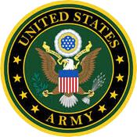
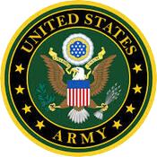

SAMS Post 81
Archie
McIntosh
South East AZ
"To protect and promote Scottish and American armed forces customs,traditions,and heritage."

"To protect and promote Scottish and American armed forces customs,traditions,and heritage."
 



Archie McIntosh was a famed Scots-Indian scout for the US Army during the Indian Wars period of our westward expansion and Post 81 is proud to carry his name on our Post.
McIntosh was described as “tall, slender…a good drinking man and a hell of a talker.” He sometimes had to be propped up on his horse or carried in a wagon after an all-night binge, but the temperate General Crook always forgave him of his behavior, believing McIntosh’s professional judgement was “Razor Sharp.”
The Scottish–American Military Society (SAMS) was founded and chartered in North Carolina, April 12, 1981, as a non-profit organization with the following purpose:


The Society was founded as a veterans organization. The membership is composed primarily of veterans of Scottish ancestry who have served –– or are serving –– in the Armed Forces of the United States and the Commonwealth. If you support the purposes shown above, we would welcome your membership if you qualify. Membership is open to honorably discharged veterans or active duty or reserve military persons who have served or are serving with any branch of the United States or Commonwealth Armed Forces.